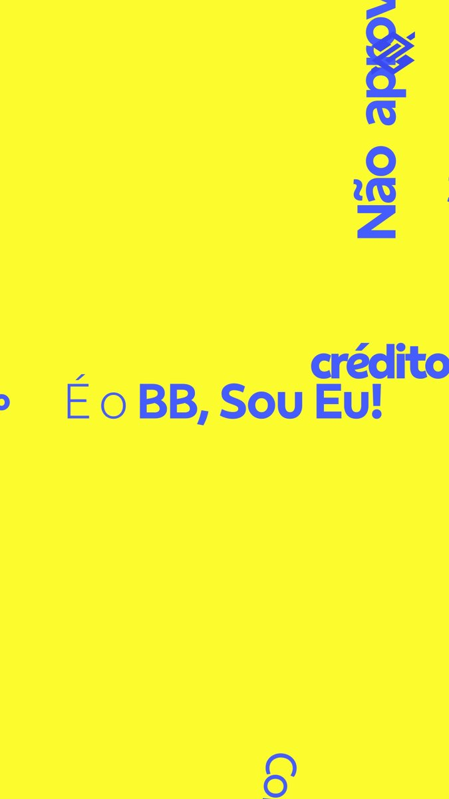
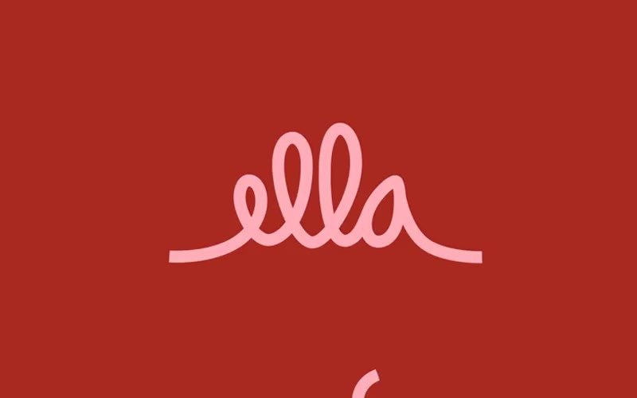

Client work
 Case study
Case studyNa Praia Festival
 Case study
Case studyTorcida do Brasil
 Case study
Case studyRouto Launch Film
 Case study
Case studyUSE Àwúre

bB Wallet

Clarice’s Dream

Ourocard Stories

Afropunk

Security Tips

Case studyCase studyCase studyCase study
